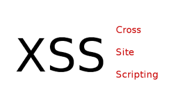
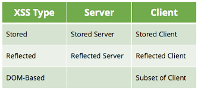
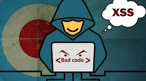
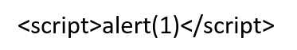

XSS ‘in tanımı Siteler Arası Betik Çalıştırma(Cross-Site Scripting), genellikle web uygulamalarında bulunan bir tür bilgisayar güvenlik açıklığıdır. Injection ailesine ait bir zafiyet türüdür. Zafiyet uygulama tarafından kullanıcı girdisine izin verilmesi sonucu ortaya çıkmaktadır. Siteler arası betik çalıştırma açıklığı, saldırganlar tarafından aynı kök politikası gibi bazı erişim kontrollerini atlatmak için kullanılabilmektedir.
Web sayfaları üzerinde gerçekleştirilen siteler arası betik çalıştırma saldırıları, 2007 itibarıyla Symantec’in raporladığı tüm güvenlik açıklıklarının yaklaşık olarak %84’ünü oluşturmaktadır. Zafiyet içeren sitenin işlediği verinin hassasiyetine ve site sahibi tarafından uygulanan güvenlik tedbirlerine bağlım olarak, etkisi ufak bir aksamadan önemli bir güvenlik riskine kadar değişebilmektedir.
XSS Türleri

3 Çeşit XSS türü vardır. Reflected XSS, Stored XSS ve Dom XSS
1.Reflected XSS
Kullanıcının girilmesi beklenen parametre yerine Javascript kodu girerek bunu ekrana yansıtması ile tespit edilebilen XSS çeşitidir.
2.Stored XSS
Adında anlaşılacağı üzere kalıcı XSS türüdür. Bu sefer girilen payloadlar anlık olarak yansımaz bir veritabanına ya da başka bir yere kayıt edilir daha sonradan ziyaret edildiğinde çalışan XSS çeşitidir.
3.Dom XSS
Dom ( Document OBJECT Model) XSS Dom lardan kaynaklanan XSS’dir. Genelde # işaretinden sonra payload denenmesi ve sayfa yenilendiğinde alert alındığında DOM XSS var denilen XSS açıklığıdır.
XSS Nasıl Önlenir ?

Bu saldırıyı engellemek için aşağıdaki birkaç önlem alınabilir.
1.Arama girdisi, uygun kodlama kontrolünü içerecek şekilde sterilize edilebilir.
2.Web sunucusu geçersiz istekleri yönlendirecek şekilde ayarlanabilir.
3.Web sunucusu eşzamanlı girişi tespit edebilir ve oturumları sonlandırabilir.
4.Web sunucusu iki farklı IP adresinden eşzamanlı girişi tespit edebilir ve oturumları sonlandırabilir.
5.Web sitesi daha önce kullanıcıları kredi kartı numarasının sadece birkaç hanesini gösterebilir.
6.Web sitesi kullanıcıların kayıt bilgilerini değiştirmeden önce tekrar parolalarını girmelerini gerektirebilir.
7.Web sitesi İçerik Güvenlik Politikası’ nın pek çok farklı yönünü kullanabilir.
8.Kullanıcılar,”tehlikesiz gözüken” ancak kötücül olan linklere tıklamamaları konusunda eğitilebilir.
9.Çerez HttpOnly bayrağı ile işaretlenerek JavaScript’in çereze erişimi engellenebilir.
XSS Zafiyeti Nasıl Bulunur ?
XSS zafiyetini sömürmek için web sitesindeki arama alanları saldırmak için güzel bir alandır. Buraya aşağıdaki gibi basit bir javascript kodu yazıp deneyebiliriz.

Yukaridaki javascript kodunu çalıştığında web sitesi bir uyarı gösterir ve kodumuzun çalıştığını anlayabiliriz.
Bir web sitede elimizle tek tek payload deneyerek XSS zafiyeti aramak zor olabilir. İşimizi biraz kolaylaştırmak için BurpSuite içerisinde web sitesindeki input alanına XSS payloadları ile bir brüte force atağı yapabiliriz.
Kullanılabilecek XSS kodları:
XSS Payload ListOkuduğunuz için teşekkürler :)